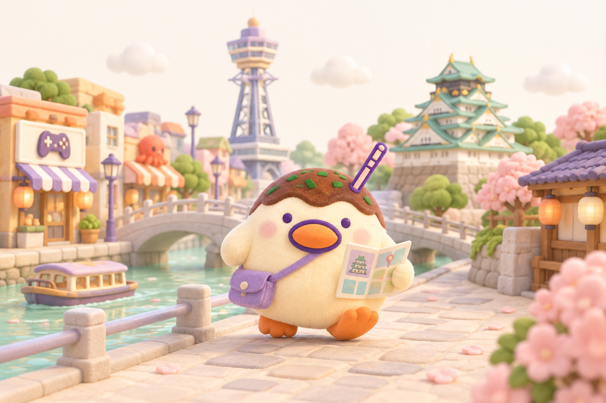

大阪発プロeスポーツチーム「OsakaPNG」、FPSの実力派ストリーマー「みゆ」が電撃復帰！『Battlefield 6』旋風吹き荒れる2025年の戦場へ再参戦
「新しい時代の楽しいイベント from OSAKA」をミッションに掲げ、イベント企画・タレントマネジメント・教育事業を展開する株式会社PACkage（本社：大阪府箕面市、代表取締役社長：山口 勇、以下PACkage）は、…
OSAKA IS OUR HOME.GAME IS OUR LANGUAGE.
本気の一戦も、いつもの配信も。
おもろい瞬間を、いっしょに。
楽しいを共有する。OsakaPNG

NEWS & EVENTS
「新しい時代の楽しいイベント from OSAKA」をミッションに掲げ、イベント企画・タレントマネジメント・教育事業を展開する株式会社PACkage（本社：大阪府箕面市、代表取締役社長：山口 勇、以下PACkage）は、…
この度、OsakaPNG タレント部門に 不屈(@NoPain893 )が加入することをお知らせします。 不屈 Openrecで主に配信中 ・ https://x.com/NoPain893 ・ https://www.…
この度、OsakaPNG タレント部門に とわとせつな(@Setsu7a_Towawa)が加入することをお知らせします。 ・ https://x.com/Setsu7a_Towawa 今後ともOsakaPNG タレント部…
ABOUT OSAKAPNG

OsakaPNGは、大阪を拠点に活動するタレントチーム。eスポーツ、ゲーム、配信、音楽など、さまざまな「楽しい」を共有します。
2023年、PNG esportsからOsakaPNGへ。オンラインとリアルの両方で、地元のコミュニティとつながりながら活動しています。
たこ焼きとペンギンを組み合わせた「タコヤキペンギン」が目印です。
OsakaPNGの歩みを見る →GOODS & FOLLOW
OsakaPNGのグッズをSUZURIでチェック。
SUZURIで見る ↗タコヤキペンギンの8種類のスタンプ。
LINE STOREで見る ↗配信やイベントの情報を、公式SNSから。
MORE STORIES
運営会社の公式サイトに掲載された、OsakaPNGにまつわるお知らせ。日付は当時の掲載日です。
SPONSORS


CONTACT
出演、コラボ、取材、スポンサーのご相談はこちら。